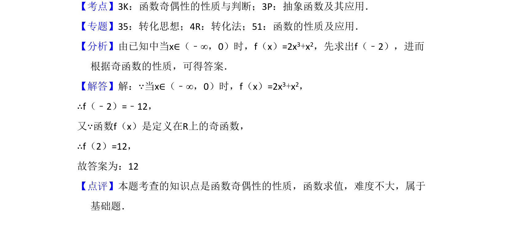

考点：函数奇偶性 函数求值
已知奇函数在x<0时的解析式，利用奇偶性求f(2)的值。

📄 原 PDF 第 10 页：
素材/真题/吉林/2008-2024·（吉林）数学高考真题/2017年高考数学试卷（文）（新课标Ⅱ）（解析卷）.pdf
14．（5分）已知函数f（x）是定义在R上的奇函数，当x∈（﹣∞，0）时，f（x ）=2x3+x2，则f（2）= 12 ．
【考点】3K：函数奇偶性的性质与判断；3P：抽象函数及其应用．菁优网版权所有 【专题】35：转化思想；4R：转化法；51：函数的性质及应用． 【分析】由已知中当x∈（﹣∞，0）时，f（x）=2x3+x2，先求出f（﹣2），进而 根据奇函数的性质，可得答案． 【解答】解：∵当x∈（﹣∞，0）时，f（x）=2x3+x2， ∴f（﹣2）=﹣12， 又∵函数f（x）是定义在R上的奇函数， ∴f（2）=12， 故答案为：12 【点评】本题考查的知识点是函数奇偶性的性质，函数求值，难度不大，属于 基础题．